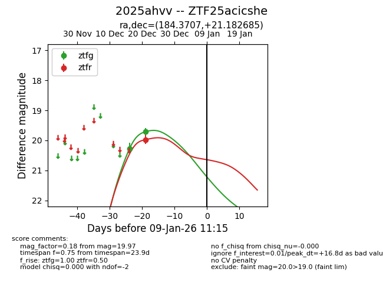
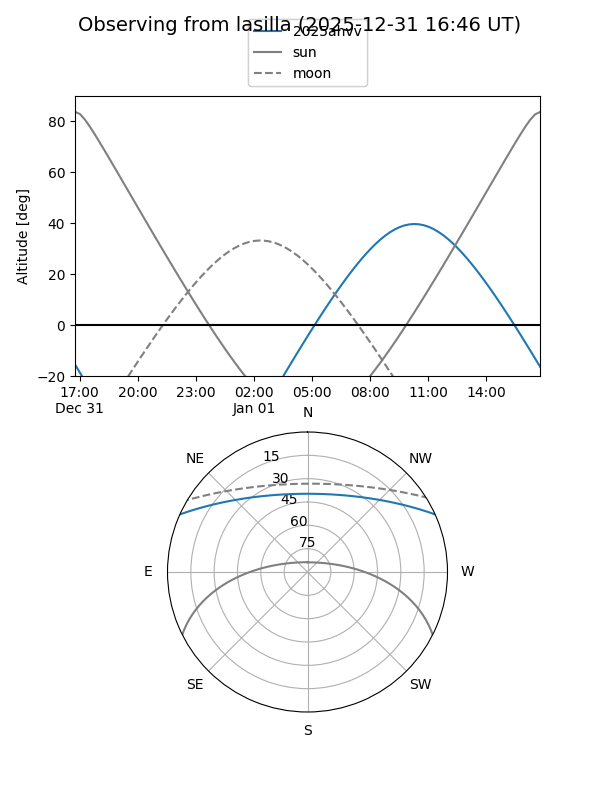
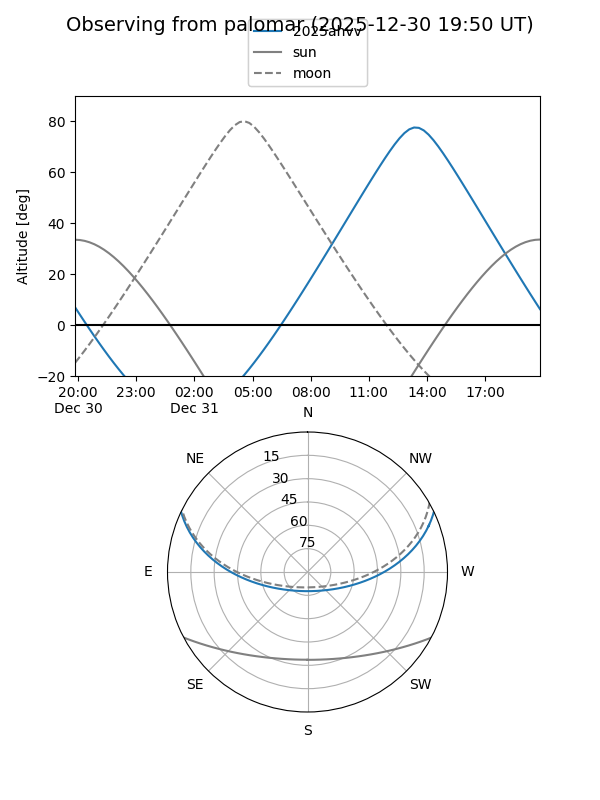
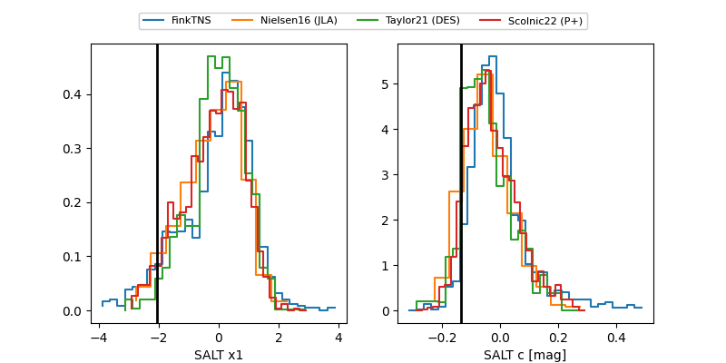

2025ahvv
Target 2025ahvv at 2025-12-21 13:02
Aliases and brokers:
FINK: fink-portal.org/ZTF25acicshe
Lasair: lasair-ztf.lsst.ac.uk/objects/ZTF25acicshe
ALeRCE: alerce.online/object/ZTF25acicshe
TNS: wis-tns.org/object/2025ahvv
YSE: ziggy.ucolick.org/yse/transient_detail/2025ahvv
alt names
ZTF25acicshe (ztf,fink_ztf)
2025ahvv (tns,yse)
Coordinates:
equatorial (ra, dec) = 184.3707,+21.18269
equatorial (HMS+DMS) = 12:17:28.97,+21:10:57.67
galactic (l, b) = (248.6375,+80.24103)
Flags:
Photometry:
last ztfg=19.71
2 ztfg detections
Lightcurve

Visibility


Additional plots
